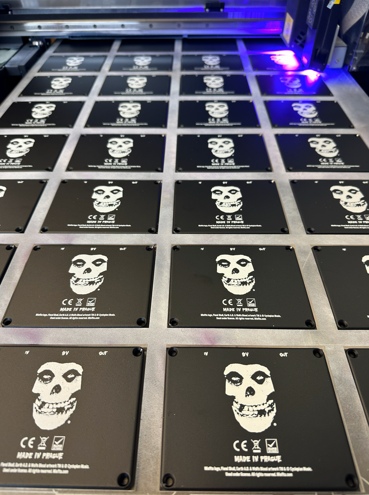
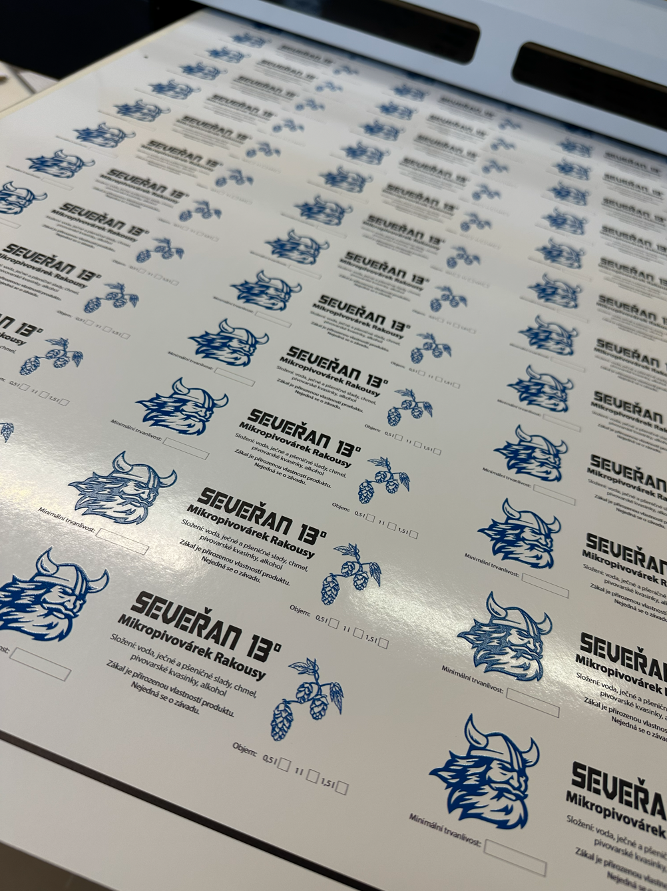
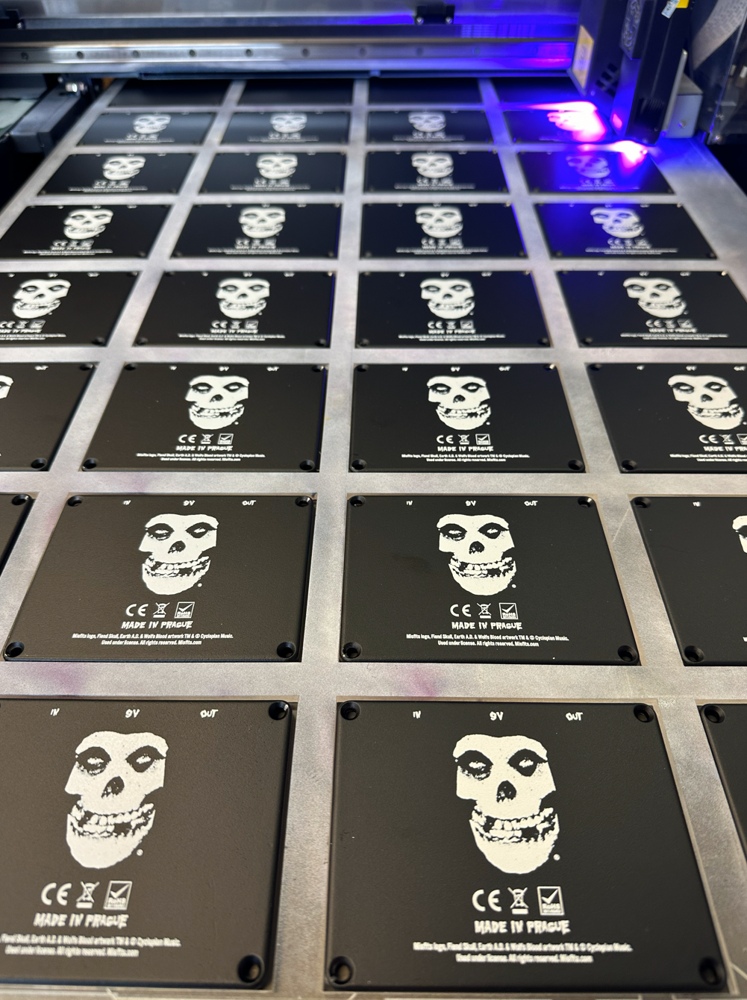
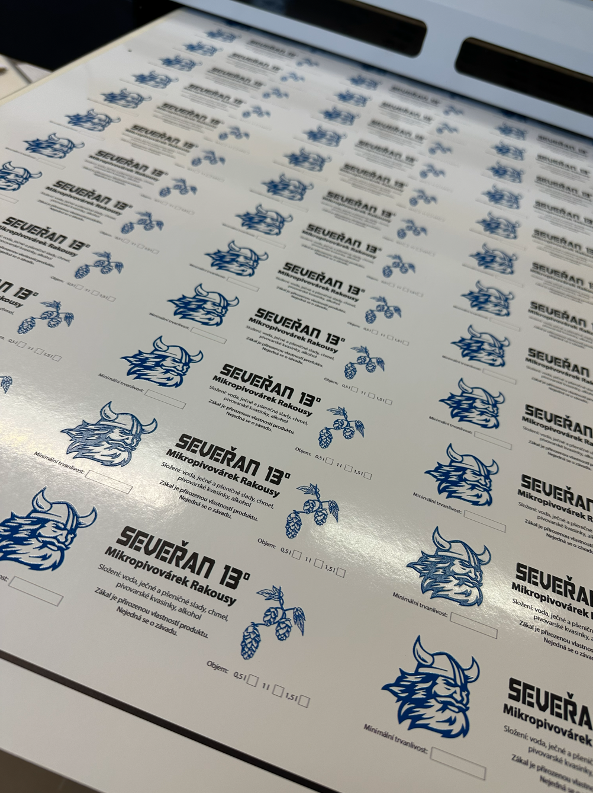
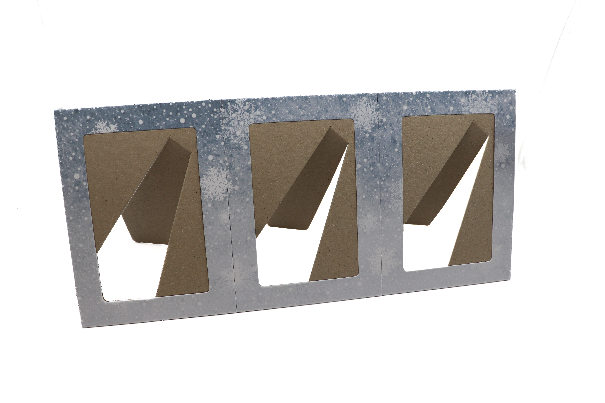
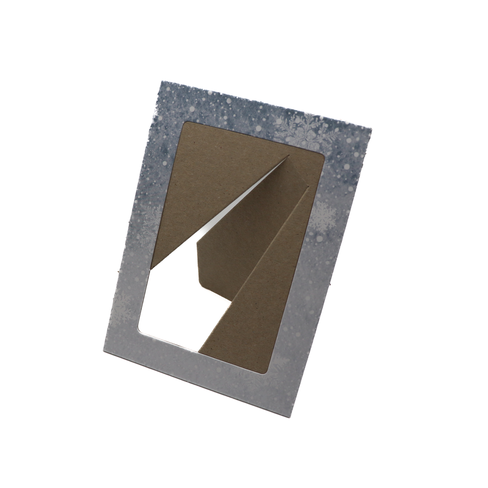
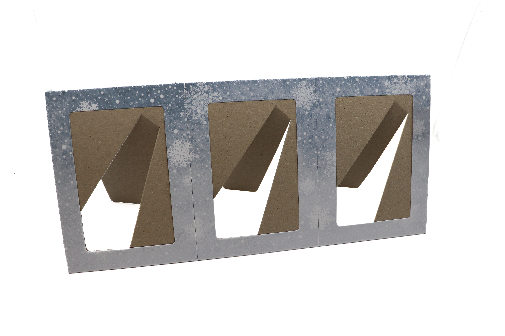
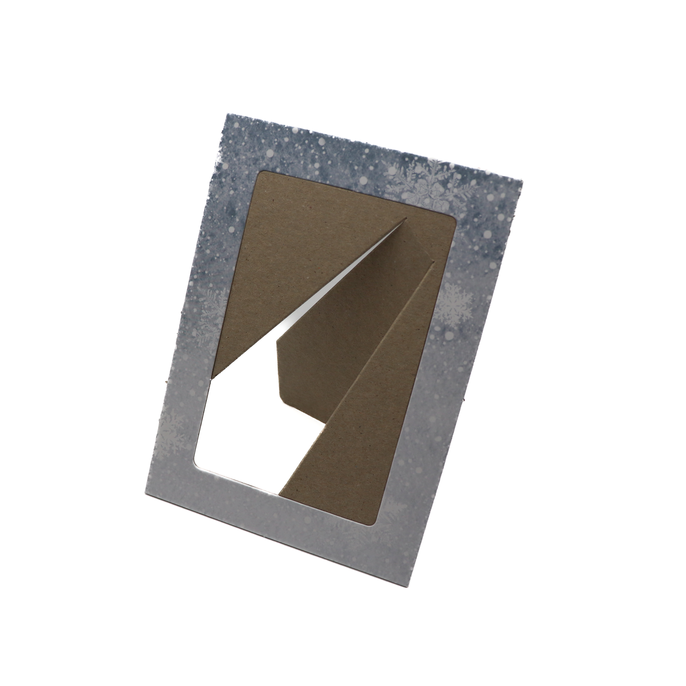

Kontakty
CHAMELEON PRINT s.r.o.
IČ:28419791
DIČ: CZ28419791
Tel:+420 241 400 814
Fax: +420 241 400 848
E-mail: office@chameleonprint.cz
Adresa
Jílové u Prahy 584, 254 01 Jílové u Prahy
Nejsme pouze tiskárna,
jsme kreativní studio s vlastní výrobou.
Dokážeme přeměnit Vaše představy do reality.
UV tisk je moderní technologie tisku, při které se barva okamžitě vytvrzuje UV světlem, což umožňuje tisknout přímo na různé materiály.
Frézování velkých formátů je obrábění materiálů pomocí CNC frézy na velkých plochách pro přesné tvary a detaily.

Laserové řezání a gravírování je přesná technologie, která pomocí laseru řeže materiály do požadovaných tvarů a vytváří detailní gravírované vzory.
Výsek a tvarový ořez je polygrafická metoda pro dodání tištěným materiálům nepravoúhlého, specifického tvaru, který nelze dosáhnout standardním ořezem. Zatímco klasický ořez je pro rovné řezy, tvarový ořez využívá výsekovou raznici (plech s noži) pro vyšší série (etikety, krabičky, visačky).
Princip ohýbání plastů - ohýbaný termoplast se umístí nad topnou tyč nebo strunu a po určitou dobu se vystaví působení tepla. Tím dojde k lokálnímu změknutí materiálu, který se dá nepatrnou silou tvarovat.

Lentikulární tisk je technologie, která se používá k výrobě obrázků s iluzí hloubky nebo možností změnit nebo přesunout obraz pohledem z různých úhlů.
Řezací plotr je zařízení, které přesně vyřezává tvary a grafiku z různých materiálů podle digitální předlohy. Používá se zejména pro výrobu samolepek, fólií a reklamních prvků.
Formátování papíru je proces, při kterém pomocí řezacího stroje upravujeme papír do různých požadovaných formátů. Díky přesnému řezu je papír připraven k dalšímu zpracování nebo tisku.
 





 




Seznám strojů:
CHAMELEON PRINT s.r.o.
IČ:28419791
DIČ: CZ28419791
Tel:+420 241 400 814
Fax: +420 241 400 848
E-mail: office@chameleonprint.cz
Jílové u Prahy 584, 254 01 Jílové u Prahy
@Chameleonprint s.r.o